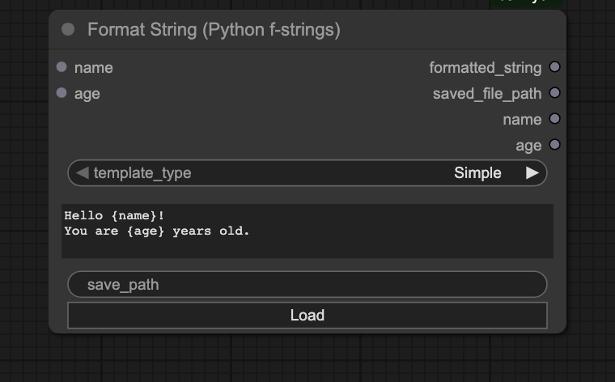
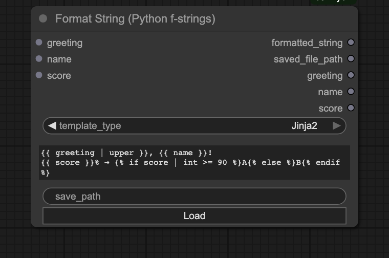
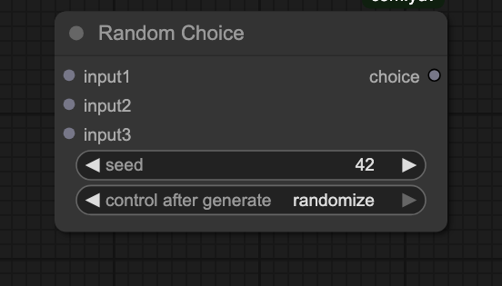
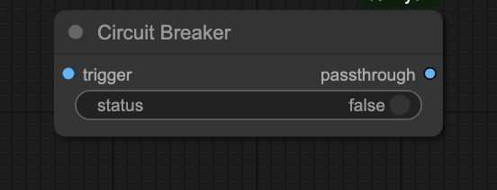
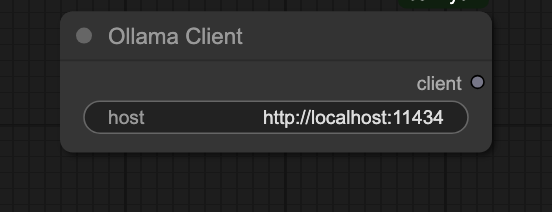
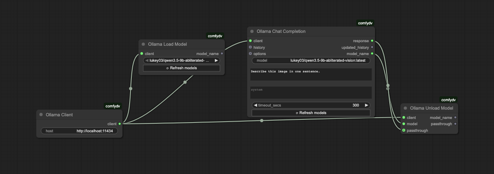
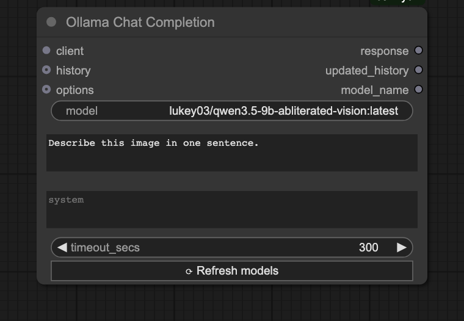
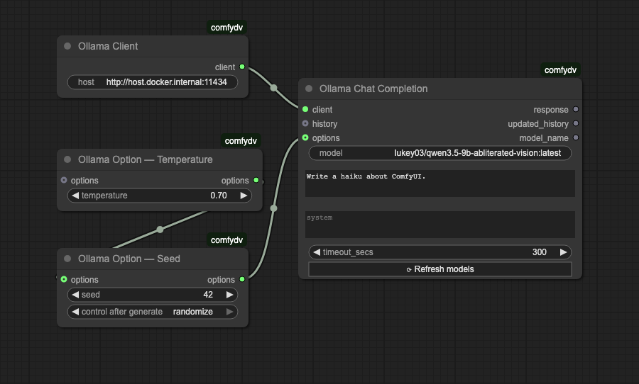
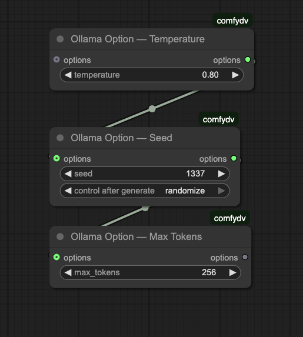

comfydv
A collection of workflow efficiency and quality-of-life nodes built out of necessity for personal ComfyUI use.
| Node | What it does |
|---|---|
| Format String | Formats a string from a Python f-string or Jinja2 template. Detects variables in the template and automatically adds/removes input sockets. |
| Random Choice | Accepts any number of typed inputs and outputs one at random, with a configurable seed for reproducibility. |
| Circuit Breaker | Halts the current ComfyUI queue run gracefully without crashing the server. Wire the status toggle to a boolean condition to skip the rest of the queue when a condition isn't met. |
| Ollama Client | Configures a connection to an Ollama server (default: http://localhost:11434). Threads the host URL through the graph as an OLLAMA_CLIENT socket. |
| Ollama Model Selector | Fetches the live model list from Ollama and presents it as a dropdown. Outputs the selected model name. |
| Ollama Load Model | Loads a model into Ollama's memory using /api/generate with keep_alive=-1. |
| Ollama Unload Model | Evicts a model from Ollama's memory using /api/generate with keep_alive=0. |
| Ollama Chat Completion | Sends a prompt (and optional conversation history) to Ollama /api/chat. Response and history are shown inline in the node body and available as output sockets. |
| Ollama Option — * | Seven composable option nodes (Temperature, Seed, Max Tokens, Top P, Top K, Repeat Penalty, Extra Body) that merge into an OLLAMA_OPTIONS dict wired into Chat Completion. |
| Ollama Debug History | Serialises an OLLAMA_HISTORY list to a pretty-printed JSON string for inspection. |
| Ollama History Length | Returns the number of messages in an OLLAMA_HISTORY list as an integer. |
Install
Via ComfyUI Manager (recommended): search for comfydv and click Install.
Manual:
cd /path/to/ComfyUI/custom_nodes
git clone https://github.com/darth-veitcher/comfydv.git
Restart ComfyUI. The nodes appear under the dv/ and dv/ollama categories in the node menu. Runtime dependencies (jinja2, aiohttp) are installed automatically via requirements.txt.
For Ollama nodes: install Ollama and pull at least one model (ollama pull qwen2.5:latest) before using the Ollama nodes.
Format String
Formats text from a Python f-string or Jinja2 template. As you type the template, input sockets appear and disappear automatically — one per variable detected.
Python f-strings
Type {variable_name} and a socket appears. Wire it to any string output in your workflow.

| Output | Content |
|---|---|
formatted_string |
The rendered result |
saved_file_path |
Path written to disk (if save_path is set) |
<var> … |
Pass-through of each input value, for easy chaining |
Jinja2 templates
Switch template_type to Jinja2 to unlock filters (| upper, | int, …), conditionals ({% if %}…{% endif %}), and loops.

Variables detected in {{ }} expressions become input sockets exactly as in Simple mode. See the Jinja2 documentation for the full filter/test reference.
Random Choice
Connect any number of inputs of the same type. Each run picks one at random. Set seed for reproducibility.

- Accepts any ComfyUI type (STRING, IMAGE, CONDITIONING, …)
- Add as many inputs as you like; unused slots are removed automatically when disconnected
seed = 0randomises on every run; any other value locks the selection
Circuit Breaker
Stops the queue gracefully when a condition isn't met — no crash, no error, just a clean halt.

Wire an image (or any trigger) into trigger and a boolean into status. When status is false the node raises InterruptProcessingException, which tells ComfyUI to stop the current run cleanly. When status is true the image passes through unchanged.
Typical use: skip an expensive upscale step when a quality-check node says the draft is already good enough.
Ollama
14 nodes for integrating a local Ollama LLM into your ComfyUI workflow. The host URL is configured once in Ollama Client and threaded through the graph — all downstream nodes receive it via the OLLAMA_CLIENT socket.
Ollama Client node
Configure the server address once; all downstream Ollama nodes inherit it automatically.

Model lifecycle (load and unload)
On memory-constrained machines and single-GPU setups, explicitly loading and unloading the model before and after inference is critical. Ollama Load Model pins the model into VRAM (keep_alive=-1); Ollama Unload Model evicts it immediately (keep_alive=0), freeing memory for image generation or other models.

The correct chain is Load → Chat → Unload, enforced through data dependencies:
- Wire
OllamaLoadModel.model_name→OllamaChatCompletion.model. This creates the data dependency that guarantees Load runs before Chat and passes the model name into the Chat node's plain-stringmodelinput. - Wire
OllamaChatCompletion.model_name→OllamaUnloadModel.model. This guarantees Unload runs after Chat completes. - Optionally wire
OllamaChatCompletion.response→OllamaUnloadModel.passthrough— Unload returns the response unchanged so the rest of your workflow can still consume it.
Minimal chat workflow
- Ollama Client → set host (default
http://localhost:11434) - Ollama Model Selector → pick a model from the live dropdown (or type/wire a model name directly into Chat Completion's
modelinput) - Ollama Chat Completion → wire client + model + prompt; the response appears inline in the node body and is also available as an output socket

Wire multiple nodes together for a complete end-to-end workflow:

Option nodes
Chain any combination of Ollama Option — nodes before Chat Completion to override inference parameters:
| Option node | Ollama param |
|---|---|
| Temperature | temperature |
| Seed | seed |
| Max Tokens | num_predict |
| Top P | top_p |
| Top K | top_k |
| Repeat Penalty | repeat_penalty |
| Extra Body | arbitrary JSON merged into options |

Multi-turn conversations
OLLAMA_HISTORY flows out of Chat Completion as a list of {"role", "content"} dicts. Wire it back into the next Chat Completion for multi-turn conversations, or inspect it with Ollama Debug History / Ollama History Length.